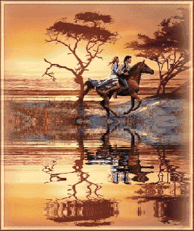
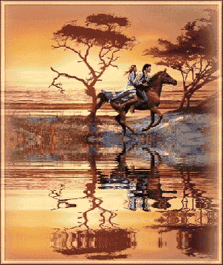
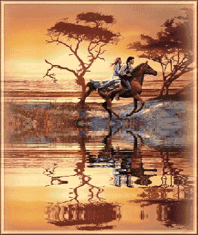

THE TWENTY-NINTH DAY
There is a proverb—and what splendid things proverbs are—there is one, I say, which maintains that the appetite is restored by eating
This proverb, coarse, nay, vulgar though it be, has none the less a very extensive significance: to wit, that, by dint of performing horrors, one's desire to commit additional ones is whetted, and that the more of them one commits, the more of them one desires
Well, such exactly was the case with our insatiable libertines
"Through unpardonable harshness, through a detestable refinement of debauchery, they, as we know, had condemned their wives to render them the vilest and most unclean services upon their emergence from the privy"
They were not content with that, and on the 29th of November they proclaimed a new (which appeared to have been inspired by the previous night's sodomistical libertinage), a new law, I say, which ruled that, as of the 1st of December, those wives would serve as the only pots to their masters'
needs, and that the said needs, both the greater and the lesser, would never be executed anywhere save in their wives' mouths; that whenever Messieurs were moved to satisfy these fundamental urges, they would be followed about by four sultanas who would, once the urge had been satisfied, render them the service which heretofore the wives had rendered them and which the said wives would hereafter be unable to render them, since they were going to have graver employment; that the four officiating sultanas would be Colombe for Curval, Hébé for the Duc, Rosette for the Bishop, and Michette for Durcet; and that the least error or failure committed in the course of either of these operations, whether in the course of that involving the wives or in that other involving the four little girls, would be punished with prodigious severity
"The poor women had no sooner learned of this new regulation than they wept and wrung their hands, unfortunately, it was all but in vain"
It was however ordained that each wife would serve her husband, and Aline the Bishop, and that for this one operation Messieurs would not be allowed to exchange them
Two of the duennas were ordered to take turns presenting themselves for the same service, and the time for their rendering it was unalterably fixed at the hour Messieurs would depart the evening orgies; it was decided that Messieurs would at all times proceed to this ritual in each other's company, that while the elders were operating, the four sultanas, while waiting to give the service required of them, would make conspicuous display of their asses, and that the elders would move from one anus to the next, to press it, open it, and encourage it generally to function
This regulation promulgated, the friends proceeded that morning to administer the punishments which had not been distributed the night before because of the decision to perform the orgies with the assistance of men only
""
The operation was undertaken in the sultanas' quarters; they were all eight taken care of, and after them came Adelaide, Aline, and Cupidon, who also were included upon the fatal list; the ceremony, with the details and all the protocol observed under such circumstances, dragged on for nearly four hours, at the end of which their Lordships descended to dinner, their heads swimming, especially Curval's head, for he, prodigiously cherishing these exercises, never took part in them without the most definite erection
"As for the Duc, he had discharged in the thick of the fray, and so had Durcet"
"This latter, who was beginning to develop a very mischievous libertine testiness toward his wife Adelaide, was unable to discipline her without shudders of pleasure which ultimately loosened his seed"
Dinner was, as usual, followed by coffee; Messieurs, disposed to have some neat little asses on hand, had appointed Zéphyr and Giton to serve the cups, and to these two might have added a large number of others; but there was not one sultana whose ass was in anything like an appropriate state
"In accordance with schedule, the coffee-serving team was rounded out by Colombe and Michette"
Curval, examining Colombe's ass, the bedaubed condition whereof, in part the Président's own work, generated some singular desires in him, thrust his prick between her thighs from behind, while so doing fondling her buttocks vivaciously; now and again, as it moved to and fro, his engine, as if through maladdress, nudged up against the dear little hole he would have given a kingdom to perforate
For a moment he studied it attentively
""
"O sacred God," he said, turning to his friends, "I'll pay the society two hundred louis on the spot for leave to fuck this ass
"""
Reason prevailed, however, he kept a grip upon himself and did not even discharge
But the Bishop had Zéphyr discharge into his mouth and yielded up his own sanctified fuck as he swallowed that delicious child's; Durcet had himself kicked in the ass by Giton, then had Giton shit, and remained chaste
Messieurs removed to the auditorium, where each father, by an arrangement which was encountered rather frequently, had his daughter on his couch beside him; breeches lowered, they listened to our talented storyteller's five tales
It seemed as though, since the day I had so exactly executed Fournier's pious will, happiness smiled ever more warmly upon my house, said that distinguished whore
"Never had I had so many wealthy acquaintances"
The Benedictine prior, among my most faithful clients, one day came to tell me that, having heard of a quite remarkable fantasy and having subsequently observed it performed by one of his friends who was wild about it, he had a powerful desire to enact it himself, and hence he asked
"me for a girl well fledged with hair"
I gave him a big creature of twenty-eight years who had veritable thickets both under the arms and upon her mound
"Splendid," said the prior upon beholding the goods, "that's just what I need
" And as he and I were very closely attached to each other, as we had taken many a gay tumble together, he made no objections when I requested leave to watch him at work
He had the girl undress and half recline upon a couch, her arms extended above her head, and, armed with a sharp pair of scissors he set to cropping the hear beneath her arms
Once he had clipped away every bit of it, he turned to her mound, and barbered it also, but so thoroughly that when he was done one would never have believed the least vestige of hair had ever grown on any of the areas he had worked over
The job done, he kissed the parts he'd shorn and spurted his fuck upon that hairless mound, in a perfect ecstasy over the fruit of his labor
Another required a doubtless much more bizarre ceremony: I am thinking now of the Duc de Florville; I was advised to bring him one of the most beautiful women I could find
"A manservant welcomed us at the Duc's mansion, and we entered by a side door"
"We will now prepare this attractive creature," the valet said to me; "for there are several adjustments to be made in order that she be in a state to amuse my Lord the Duc… come with me
"
"By way of detours and corridors equally somber and immense, we finally reached a lugubrious suite of rooms, lighted only by six tapers placed on the floor around a mattress covered with black satin; the entire room was hung in funereal stuffs, and the sight, as we entered, woke the worst apprehensions in us"
"Calm your fears," said our guide, "you will not suffer the least hurt; but be ready for anything," he added, speaking to the girl, "and above all see to it that you do everything I tell you
"
He had her remove all her clothes, loosened her coiffure, and indicated she was to leave her hair, which was superb, to hang free
Next, he bade her lie down upon the mattress surrounded by tall candles, enjoined her to feign death and to be exceedingly careful, throughout the whole of the scene to follow, neither to stir nor breathe more deeply than she had to
"For if unhappily my master, who is going to imagine you are really dead, perceives you are only pretending, he'll be furious, will leave you at once, and surely will not pay you a sou
"
Directly he had placed the girl upon the pallet in the attitude of a corpse, he had her twist her
mouth in such a way as to give the impression of pain, her eyes too were to suggest she had died in agony; he scattered her tresses over her naked breast, lay a dagger beside her, and near her heart smeared chicken's blood, painting a wound the size of one's hand
""
"I repeat to you," he said to the girl, "be not afraid, you have nothing to say, nothing to do, you have simply to remain absolutely still and to draw your breath at the moments when you see he is farthest from you
"And now, Madame," the valet said to me, "we may withdraw from the room"
Come with me, please; that you not be worried about your girl, I am going to place you where you will be able to hear and watch the entire scene
"
We quit the room, leaving the girl, who was not without her misgivings, but whom the manservant's speeches had reassured somewhat
He conducts me to a small chamber adjoining the apartment where the mystery is to be celebrated, and through a crack between two panels, over which the black material was hung, I could hear everything
To see was still easier, for the material was only crepe, I could distinguish objects on the other side quite as clearly as if I had been in the room itself
The valet drew the cord that rang a bell, that was the signal, and a few minutes later we saw a tall, thin, wasted man of about sixty enter upon the stage
Beneath a loose-flowing dressing robe of India taffeta he was completely naked
He halted upon coming through the doorway; I had best tell you now that the Duc, supposing he was absolutely alone, had not the faintest idea his actions were being observed
"Ah, what a beautiful corpse!" he exclaimed at once
""Death… 'tis beautiful to behold"
"… But, my God, what's this!" said he upon catching sight of the blood, the knife"
"It must have been an assassin… only a moment ago… ah, Great God, how stiff he must be now, the person who did that
"
And, frigging himself:
"How I would have loved to see him strike that blow!"
And fondling the corpse, moving his hand over its belly:
"Pregnant?… No, apparently not
What a pity
"
And continuing to explore with his hands:
"Superb flesh! It's still warm… a lovely breast
"""
Wherewith he bent over her and kissed her mouth with incredible emotion:
"Still drooling," he said; "how I adore this saliva!"
And once again he drove his tongue almost into her gullet; no one could possibly have played the role more convincingly than did that girl, she lay stock-still, and whenever the Duc drew near she ceased entirely to breathe
"Finally, he rolled her over upon her stomach:"
"I must have a look at this lovely ass," he murmured
""
And after having scanned it:
"Jesus Christ! What matchless buttocks!"
And then he opened them, kissed them, and we distinctly saw him place his tongue in that cunning little hole

"Oh, upon my word!" he cried, sweating with admiration, "this is certainly one of the most superb corpses I have ever seen in my life; happy he who took this girl's life, oh, enviable person, what pleasure he must have known!"
"The very idea made him discharge; he was lying beside her, squeezing her, his thighs glued against her buttocks, and he discharged upon her asshole, giving out unbelievable signs of pleasure, and, as he yielded his sperm, crying like a demon:"
""Ah fuck, fuck, ah good God, if only I had killed her, if only I had been the one!""
"Thus the operation ended, the libertine rose and disappeared; we entered the room to resurrect our brave little friend"
She was exhausted, unable to budge: constraint, fright, everything had numbed her senses, she was about ready in all earnestness to become the character she had just personified so expertly
We departed with four louis the valet gave us; as you may well imagine, he doubtless surrendered no more than half of our pay
"Ye living gods!" cried Curval, "now that is a passion! To say the least, the thing has flavor,
aroma
"
"I'm as stiff as a mule," said the Duc; "I'll stake my fortune on it, that fellow had other tricks up his sleeve
"""
"Right you are, my Lord," said Martaine; "he now and again employed a greater realism
I think Madame Desgranges and I have evidence to prove it to you
"
""And what the devil are you going to do while waiting?" Curval asked the Duc"
""Don't disturb me, don't disturb me," the Duc shouted, "I'm fucking my daughter, I'm pretending she's dead"
"
""Rascal," Curval rejoined, "that makes two crimes in your head"
"
"Ah, by fuck," said the Duc, "would that they were more real…"
"And his impure seed burst into Julie's vagina"
""Well now, Duclos, what comes next? Go on with your stories," said he as soon as he had finished his affair, "go on, my dear friend, don't allow the Président to discharge, for I can hear him over there effecting an incestuous connection with his daughter; the funny little fellow is working up some evil ideas in his head; his parents have made me his tutor, they expect me to keep an eye on his behavior and I'd be distressed were it to become perverted"
"
"Too late," said Curval, "too late, old man, I'm discharging; ah, Christ be doublefucked, 'tis a pretty death
"
And while encunting Adelaide, the scoundrel fancied to himself, as had the Duc, that he was fucking his murdered daughter; O incredible distraction of the mind of a libertine, who can naught hear, naught see, but he would imitate it that instant!
"Duclos, you must indeed continue," said the Bishop, "else I'll be seduced by those bawdy fellows' example, and in my present state I might carry things a good deal further than they
"
Some time after that last adventure I went alone to the home of another libertine, said Duclos, whose mania, more humiliating perhaps, was not however so saturnine
He receives me in a
drawing room whose floor was covered with a very handsome rug
He bids me remove all I am wearing and then, having me get down on my hands and knees:
"Let's see," says he, stroking and patting the heads of two great Danes lying on either side of his chair, "let's see whether you are as nimble and quick as my dogs
Ready? Go get it!"
And with that he tosses some large roasted chestnuts on the floor; speaking to me as if I were an animal, he says:
"Go fetch them!"
I run on all fours after a chestnut, thinking it best to play the game with good humor and enter into the spirit of his eccentricity; I run along, I say, I endeavor to bring back the chestnuts, but the two dogs, also springing forward, outrun me, seize the chestnuts, and take them back to their master
"Well, you're clearly in need of some practice before you'll be in good form," said the gentleman;
"it's not, by chance, that you are afraid my dogs might bite you? Don't worry yourself about them, my dear, they'll do you no harm, but inwardly, you know, they'll look down upon you if they see that you're a clumsy creature
So let's try again—try harder
Here's your chance to get even…
bring it back!"
Another chestnut thrown, another victory carried off by the dogs, another defeat for me; well, to make a long story short, the game lasted two hours, during which I managed to get the chestnut only once and to bring it back in my mouth to him who had thrown it
But whether triumphant or bested, never did the dogs do me any harm; on the contrary, they seemed to be having a good time playing and to be amused by me, quite as though I were a dog too
"That's enough," said the gentleman
"You've worked hard enough; it's time to eat
"
He rang, a servant entered
""
""Bring some food for my animals," he said"
And a moment later the servant returned, carrying an ebony feeding trough which was filled with a kind of very delicate chopped meat
He set the trough on the floor
"Very well," my gentlemen said to me, "get down and eat with my dogs, and try to put on a better
show while eating than you did while playing
"
There was nothing for me to reply; I had to obey
"Still on all fours, I plunged my head into the trough; the trough was very clean, the food very good, I fell to munching away beside the dogs, which very politely moved over, leaving me peacefully to my share"
And that was the critical instant for our libertine; the humiliation of a woman, the degradation to which he reduced her, wonderfully stimulated his spirits
"Oh, the buggress!" said he, frigging himself assiduously, "the tramp, look at her there, gorging herself with the dogs, that's how one should deal with all women, and if they were to be handled thus, we'd have no more sauciness from them, ah no! Domestic animals like those dogs, why should they not be treated in the same way? Ah! impudent bitch that you are, whore, slime, scum!" he cried, stepping near and spraying his fuck over my bum, "buggress, I'll have you eat with my dogs
"
And that was the end of that; our man vanished, I dressed promptly, and lying by my mantelet I found two louis , the current price and doubtless the one the rogue was accustomed to paying for his pleasures
""
"At this point, Messieurs, Duclos continued, I am obliged to retrace my steps and, by way of conclusion to the evening's narrations, to recount two adventures I had during my youth"
As they are somewhat on the strong side, they would have been out of place amidst the mild escapades with which you had me start at the beginning of the month; and so I set them aside and kept them for the end of my contribution
I was only sixteen at the time, and was still with Madame Guérin; I had been sent to the home of a man of unchallenged distinction, and, upon arriving there, was simply told to wait in a small antechamber, told to be at my ease, told to be sure to obey the lord who would soon be coming to sport with me; but they were careful not to tell me anything else: I'd not have had such a fright if I'd been forewarned, and our libertine would certainly not have had as much pleasure
I had been in the room for about an hour when the door opened at last
It was the master of the house himself
"What the devil are you doing here," he demanded with an air of surprise, "at this time of day?…
What about it, whore!" he cries, seizing me by the throat and all but choking the breath out of me,
"what about it! Has the slut come here to rob me?"
He calls to someone, a trustworthy servant immediately appears
"La Fleur," says his angry master, "I've got a thief here; she was hiding when I came in
"Strip her and prepare to carry out the orders I give you"
"
La Fleur does as he is told, I am despoiled of my clothes in a trice, they are tossed aside as they are peeled off my body
"Very well," the libertine says to his servant, "go find a sack, then sew this creature up inside it and toss her into the river
"""
The valet goes to find the sack
"I leave it to you to wonder whether I did not take advantage of these few moments to cast myself at the nobleman's feet and beg him to spare me, assuring him that it was Madame Guérin, his usual procuress, who had herself sent me to his house"
"But the lewd gentleman will have none of it, he grasps my two buttocks, and kneading them brutally between his fists:"
""Why, fuck my eyes," says he, "I think I'll feed this pretty ass to the fish"
"
"That was the single lubricious action he seemed inclined to permit himself, and until then he had exposed nothing which might have led me to suppose libertinage had something to do with the scene"
"The valet returns, bringing a sack with him; despite all my protests, and they were heated, I am dumped into it, the mouth of the sack is sewn up, and La Fleur lifts me upon his shoulders"
It was then I heard the effects of our libertine's mounting crisis; he had probably begun to frig himself as soon as I had been put in the sack
At the same instant La Fleur raised me to his shoulders, the villain's fuck departed him
"Into the river, into the river, do you hear me, La Fleur?" he said, stammering with pleasure
""Yes, into the river with her, and you'll slip a stone into the sack, so that the whore will drown all the more quickly"
"""
And that was all he had to say, I was borne out, we went into the adjacent room where La Fleur, having ripped open the sack, returned me my clothes, gave me two louis , and also gave me some unequivocal proof of the manner, radically unlike his master's, in which he conducted himself in the pursuit of happiness; then I returned to Guérin's
I severely scolded Guérin for having sent me there so poorly prepared; to placate me, she arranged another party: it took place two days later, and I was even less well prepared for the battle I was to wage with this new foe
More or less as in the adventure I have just related, I was to go and wait in an antechamber of the apartment belonging to a farmer-general, but this time I waited in the company of the valet who, sent thither by his master, had come to fetch me at Guérin's
To while away the time before my gentleman's arrival, the valet diverted me by bringing out and displaying several precious stones kept in a desk drawer in the room
"Bless me," said the good pander, "were you to take one or two of them I don't fancy it would make much difference; the old Croesus is so damned rich I wager he doesn't even know how many of 'em or what kind he's got here in his desk
Go right ahead, if you like, don't bother yourself about me, I'm not the sort of fellow to betray a little friend
"
"Alas! I was only too well disposed to follow this perfidious advice; you know my predilections, I've told you about them; and so, without his having to say another word, I put my hand upon a little gold box worth seven or eight louis , not daring to make off with any more valuable object"
That was all that rascal of a valet desired, and to avoid having to return to the matter later on, I afterward learned that, had I refused to take something, he would, without my being aware of it, have slipped a jewel or two into my pocket
"The master arrives, greets me with kindness and courtesy, the valet leaves the room, we two remain there together"
This man, unlike the other, amused himself in a very real sense; he scattered a profusion of kisses over my ass, had me flog him, fart in his mouth, he put his prick in mine, and in one word had his fill of every kind and shape of lubricity save for that sometimes sought in the cunt; but 'twas all to no purpose, he did not discharge
The propitious moment for that had not yet come, all this he had been doing was secondary, preparatory; you will soon see to what it was leading
"Why, my stars!" he suddenly exclaimed, "it had entirely slipped my mind
There's a domestic still waiting in the other room for a gem I just a moment ago promised to give him for his master
""
Excuse me, my dear, but I really must keep my word to him; then we'll get back to work
"
Guilty of the little larceny I'd just committed at the instigation of that accursed valet, you may well suppose that this remark made me tremble
I thought for an instant to stop him, confess to the theft, then I decided it would be better to play innocent and run the risk
He opens the desk, looks through first one drawer then the next, rummages about, and failing to find what he is after, he darts furious glances at me
"You slut, you alone," says he, "apart from a valet in whom I have entire confidence, you have been the only person to enter this room during the past three hours; the article is missing; you
must have taken it
"
"Oh, Monsieur," I say, shaking in every limb, "you may be sure I am incapable…"
"Damn your eyes," he roars (now, you will remark that his breeches were still unbuttoned, that his prick was protruding from them, that this prick held a vertical slope; all this, you would suppose, ought to have enlightened me and dispelled my fears, but I had all but lost my head, and noticed nothing), "come along, buggress, my valuable has got to be found
"
He ordered me to strip; twenty times I besought him on bended knee to spare me the humiliation of such a search, he would be moved by nothing, nothing melted him, he himself angrily tore off my clothes, and as soon as I was naked, he went through my pockets and, of course, it was not long before he came across the box
"Ah, you bitch!" he cried, "I need no more than that to be convinced
So, buggress, you come to a man's house to steal from him?"
And immediately summoning his lieutenant:
"Go bring an officer of the police at once," he said
"Oh, Monsieur!" I cried, "have pity upon my youthful truancy, I have been beguiled into this, 'twas not done of my own will, I was told to…"
"Well," the lecherous gentleman interrupted, "you will explain all that to the officer, for I'll be damned if I don't mean to put a stop to all this crime
"""
The valet leaves again; the libertine, still wearing a blinding erection, flings himself into an armchair and while he fumbles about his crotch, he showers a thousand invectives upon me
"This tramp, this monster," said he, "she comes to my house to rob me, I who wanted to give her the reward her services deserve… ah, by God, we shall see
"
As he utters these words a knock is heard at the door, and I see a gendarme enter
""Officer," says the master of the premises, "I have a thieving wench here I wish to put in your safekeeping, and I turn her over to you naked, for I put her in that state in order to search her"
clothing; there is the girl, over there are her garments, and here is the stolen article; I urge you to have her hanged, officer, and good night to you
"
Whereupon he reeled backward, sat down in his chair, and discharged
"Yes, hang the bitch, by sweet Jesus, I want to see her hanged, officer, do you understand me?
Hang her, that's all I ask of you!" he fairly screamed
The pretended gendarme leads me away with my clothes and the damning box, takes me into a nearby room, removes his uniform, and reveals himself to be the same valet who received me and incited me to steal; so upset had I been, I'd not recognized him hitherto
"Well, well!" said he, "were you frightened?"
"Alas," I murmur, hardly able to speak, "out of my very wits
"""
"It's all over," he said, "and here is your money
"
So saying, he presents me with the same box I had stolen, 'tis a gift from his master, he restores my clothes to me, hands me a glass of brandy, and escorts me back to Madame Guérin's
"That's an odd and pleasant mania," the Bishop observed; "the major part of it can be extracted for use in other connections
My one criticism is that it contains an excess of delicacy; you know, of course, that I don't greatly favor mixing fine feelings with libertinage
Leave that element out of it, I say, and from that story one may learn the infallible method of preventing a whore from complaining, regardless of the iniquitous ways one might be disposed to take with her
"One has only to proffer the bait, draw her into the trap, and when you've caught her red-handed, why then you are at liberty to do what you wish with her, there's nothing more to fear, she won't dare emit a peep for fear either of being accused or the object of your recriminations"
"""
"It is indeed," said Curval, "and I am sure that had I been in that gentleman's place, I would have permitted myself to go somewhat further, and you, my dear Duclos, might not have got off so lightly
"""
"The stories having been long that evening, the supper hour arrived before Messieurs had the opportunity to indulge in any frolicking"
They thus repaired to table firmly resolved to make the most of the period following the meal
It was then that, having assembled the entire household,
they decided to determine which of the little girls and boys could be justifiably ranked as mature men and women
To establish the critical facts, Messieurs thought best to frig everyone of the one sex and of the other about whom they had any doubts, or rather suspicions; amongst the women, they were sure of Augustine, Fanny, and Zelmire: these three charming little creatures, aged between fourteen and fifteen, all discharged in response to the lightest touch; Hébé and Michette, each being only twelve, were hardly worth considering, and so it was simply a question of experimenting with Sophie, Colombe, and Rosette, the first of whom was fourteen, the latter two being thirteen years old
"Amongst the boys, it was a matter of common knowledge that Zéphyr, Adonis, and Céladon shot their fuck like grown men; Giton and Narcisse were too young to bother putting through their paces; the abilities of Zélamir, Cupidon, and Hyacinthe remained to be ascertained"
The friends formed a circle about a pile of well-stuffed pillows arranged on the floor, Champville and Duclos were nominated for the pollutions; one, owing to her qualities as a tribade, was to act as the young girls' fricatrice, the other, absolute mistress of the art of frigging the male member, was to pollute the three little lads
They entered the ring formed by the friends' chairs and filled with pillows, and there Sophie, Colombe, Rosette, Zélamir, Cupidon, and Hyacinthe were turned over to Champville and Duclos; and each friend, the better to appreciate the spectacle, took a child between his thighs: the Duc appropriated Augustine, Curval had Zelmire to do his bidding, Durcet entrusted himself to Zéphyr's skill, the Bishop favored Adonis to supply his needs
""
The ceremony began with the boys; Duclos, her breasts and ass uncovered, her sleeve rolled to the elbow, mobilized all her many talents and set to polluting each of those delicious Ganymedes one after the other
"The human hand could not possibly have wandered and tugged, squeezed and patted more voluptuously; her wrist, her fingers flew with a deftness… her movements were of a delicacy and of a willfulness… she offered those little boys her mouth, her breast, her ass, made all of herself available with such art that there could be no question but that they who were not finally to discharge had not yet the power to do so"
"Zélamir and Cupidon hardened, but all Duclos' lore, all her agility, was quite in vain"
With Hyacinthe, however, the storm burst after the sixth flick of the wrist: fuck leapt over Duclos' breast, and the child went half out of his mind while fondling her ass
Messieurs were careful to observe that throughout the entire operation it had never once occurred to the lad to touch her in front
The girls' turn came next; virtually naked, her hair very elegantly arranged and equally stylish in every other part of herself, Champville did not look thirty years old, although she was fifty if a day
The lubricity of this operation, whence, as a thoroughgoing tribade, she expected to mine the greatest pleasure, animated her large dark-brown eyes which, since her youth, had always been
extremely handsome
She put at least as much verve, daring, and brilliance into her actions as Duclos had into hers, she simultaneously polluted the clitoris, the entrance to the vagina, and the asshole, but Nature developed nothing worthy of notice in Colombe and Rosette; there was not even the faintest appearance of pleasure in their expressions
But things were not thus with the beautiful Sophie: the tenth digital foray brought her fainting upon Champville's breast; little broken sighs, little panting sounds, the tender shade of crimson which sprang into her lovely cheeks, her parted lips which grew moist, everything manifested the delirium whereinto Nature had hurled her, and she was declared a woman
The Duc, his device as solid as a mace, ordered Champville to frig her a second time, and when she discharged afresh, the villain chose that moment to mix his impure fuck with that young virgin's
As for Curval, he had wrought his fell deed between Zelmire's thighs, and the two others theirs with the young boys they held locked between their legs
The company retired for the night, and the following morning having furnished no event which deserves to be cited in this catalogue of exceptional feats, and dinner having furnished nothing, nor coffee, we shall remove at once to the auditorium, where the magnificently arrayed Duclos appears once again upon the platform, this time to end, with five new stories, the one hundred and fifty narrations which have been entrusted to her for the thirty days of the month of November
""


 
